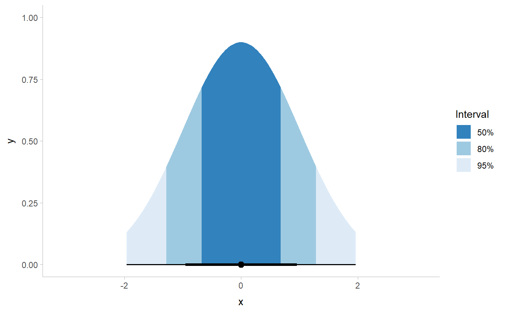
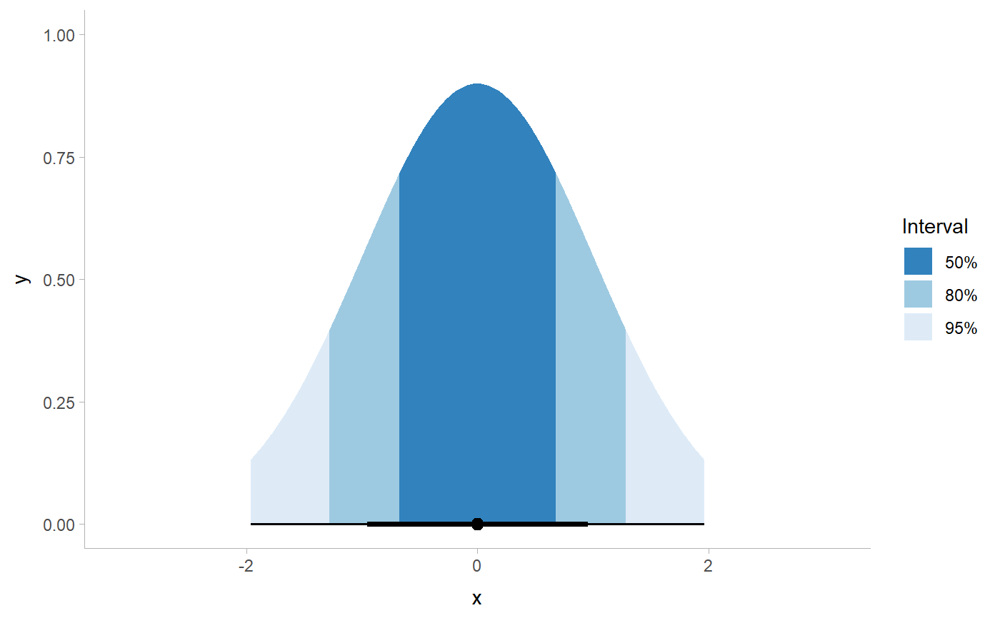

Given a vector of probabilities from a cumulative distribution function (CDF)
and a list of desired quantile intervals, return a vector categorizing each
element of the input vector according to which quantile interval it falls into.
NOTE: While this function can be used for (and was originally designed for)
drawing slabs with intervals overlaid on the density, this is can now be
done more easily by mapping the .width or level computed variable to
slab fill or color. See Examples.
Usage
cut_cdf_qi(p, .width = c(0.66, 0.95, 1), labels = NULL)Arguments
- p
<numeric> Vector of values from a cumulative distribution function, such as values returned by
p-prefixed distribution functions in base R (e.g.pnorm()), thecdf()function, or values of thecdfcomputed aesthetic from thestat_slabinterval()family of stats.- .width
<numeric> Vector of probabilities to use that determine the widths of the resulting intervals.
- labels
<character | function | NULL> One of:
A character vector giving labels (must be same length as
.width)A function that takes numeric probabilities as input and returns labels as output (a good candidate might be
scales::percent_format()).NULLto use the default labels (.widthconverted to a character vector).
Value
An ordered factor of the same length as p giving the quantile interval to
which each value of p belongs.
See also
See stat_slabinterval() and
its shortcut stats, which generate cdf aesthetics that can be used with
cut_cdf_qi() to draw slabs colored by their intervals.
Examples
library(ggplot2)
library(dplyr)
library(scales)
library(distributional)
theme_set(theme_ggdist())
# NOTE: cut_cdf_qi() used to be the recommended way to do intervals overlaid
# on densities, like this...
tibble(x = dist_normal(0, 1)) %>%
ggplot(aes(xdist = x)) +
stat_slab(
aes(fill = after_stat(cut_cdf_qi(cdf)))
) +
scale_fill_brewer(direction = -1)
 # ... however this is now more easily and flexibly accomplished by directly
# mapping .width or level onto fill:
tibble(x = dist_normal(0, 1)) %>%
ggplot(aes(xdist = x)) +
stat_slab(
aes(fill = after_stat(level)),
.width = c(.66, .95, 1)
) +
scale_fill_brewer()
# ... however this is now more easily and flexibly accomplished by directly
# mapping .width or level onto fill:
tibble(x = dist_normal(0, 1)) %>%
ggplot(aes(xdist = x)) +
stat_slab(
aes(fill = after_stat(level)),
.width = c(.66, .95, 1)
) +
scale_fill_brewer()
 # See vignette("slabinterval") for more examples. The remaining examples
# below using cut_cdf_qi() are kept for posterity.
# With a halfeye (or other geom with slab and interval), NA values will
# show up in the fill scale from the CDF function applied to the internal
# interval geometry data and can be ignored, hence na.translate = FALSE
tibble(x = dist_normal(0, 1)) %>%
ggplot(aes(xdist = x)) +
stat_halfeye(aes(
fill = after_stat(cut_cdf_qi(cdf, .width = c(.5, .8, .95, 1)))
)) +
scale_fill_brewer(direction = -1, na.translate = FALSE)
# See vignette("slabinterval") for more examples. The remaining examples
# below using cut_cdf_qi() are kept for posterity.
# With a halfeye (or other geom with slab and interval), NA values will
# show up in the fill scale from the CDF function applied to the internal
# interval geometry data and can be ignored, hence na.translate = FALSE
tibble(x = dist_normal(0, 1)) %>%
ggplot(aes(xdist = x)) +
stat_halfeye(aes(
fill = after_stat(cut_cdf_qi(cdf, .width = c(.5, .8, .95, 1)))
)) +
scale_fill_brewer(direction = -1, na.translate = FALSE)
 # we could also use the labels parameter to apply nicer formatting
# and provide a better name for the legend, and omit the 100% interval
# if desired
tibble(x = dist_normal(0, 1)) %>%
ggplot(aes(xdist = x)) +
stat_halfeye(aes(
fill = after_stat(cut_cdf_qi(
cdf,
.width = c(.5, .8, .95),
labels = percent_format(accuracy = 1)
))
)) +
labs(fill = "Interval") +
scale_fill_brewer(direction = -1, na.translate = FALSE)

# we could also use the labels parameter to apply nicer formatting
# and provide a better name for the legend, and omit the 100% interval
# if desired
tibble(x = dist_normal(0, 1)) %>%
ggplot(aes(xdist = x)) +
stat_halfeye(aes(
fill = after_stat(cut_cdf_qi(
cdf,
.width = c(.5, .8, .95),
labels = percent_format(accuracy = 1)
))
)) +
labs(fill = "Interval") +
scale_fill_brewer(direction = -1, na.translate = FALSE)
